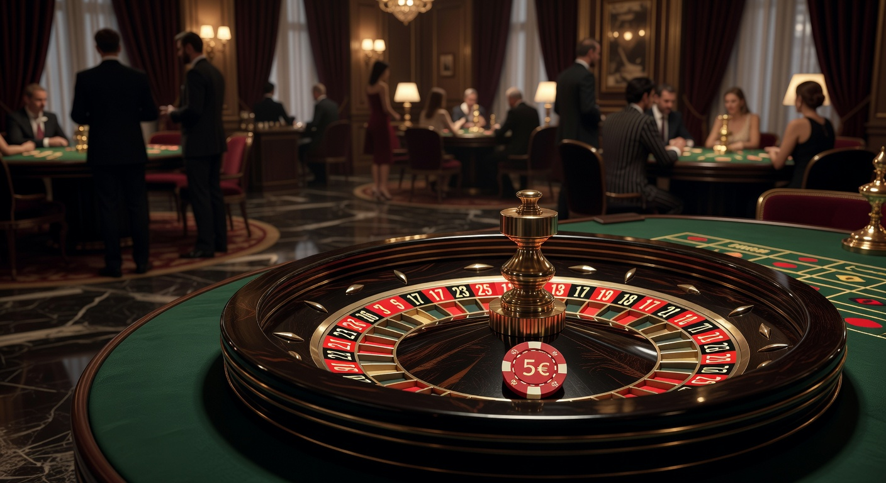
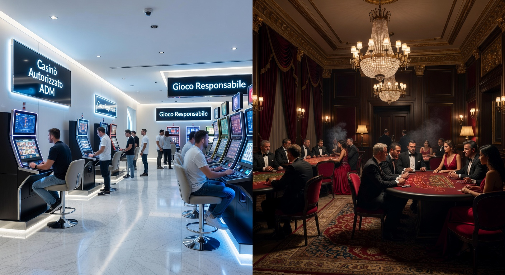
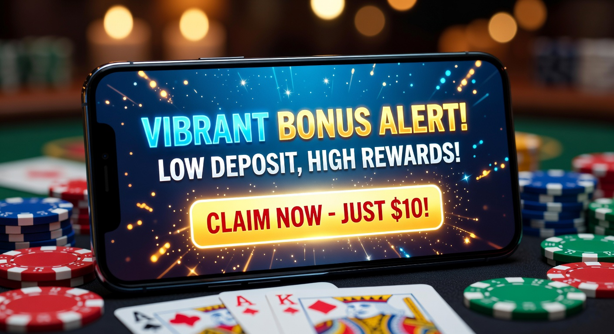
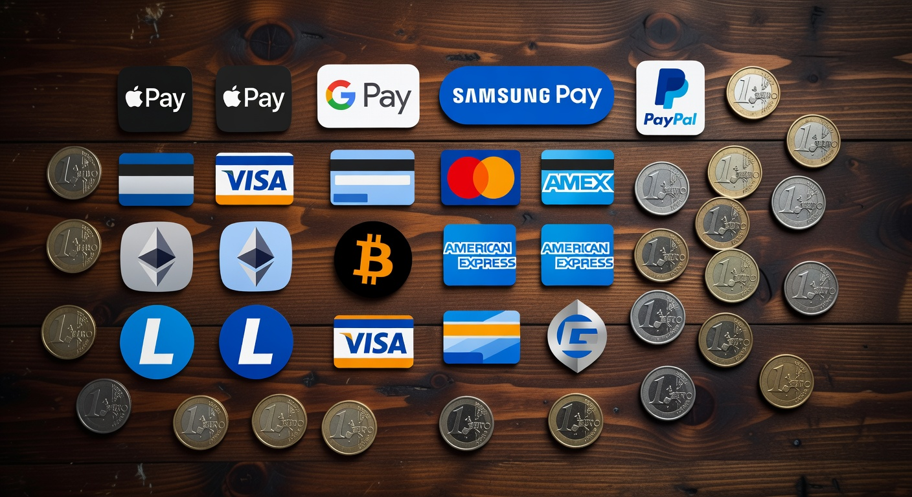
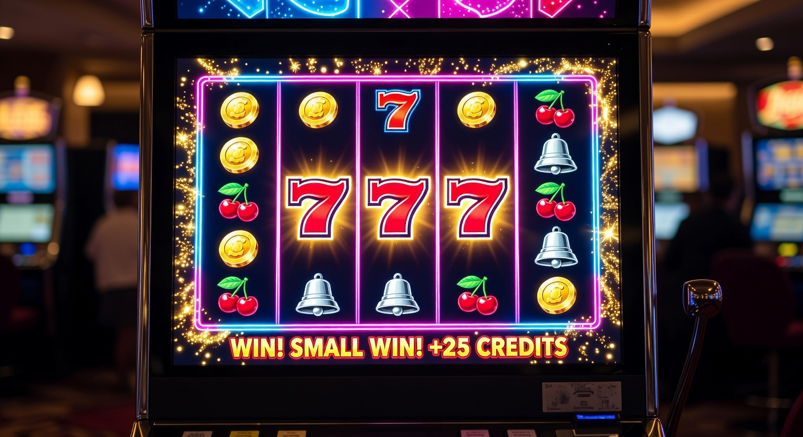

Casinò non AAMS deposito 5 euro: Guida completa ai siti con ricarica minima
Nel panorama del gambling digitale del 2026, l'accessibilità è diventata il pilastro fondamentale per i giocatori italiani. Trovare un casinò non aams deposito 5 euro non è più un'impresa ardua, ma una scelta strategica per chi desidera testare nuove piattaforme senza impegnare capitali ingenti. Queste piattaforme internazionali, spesso dotate di licenze europee o extra-europee come quelle di Curaçao, offrono una flessibilità che molti operatori locali faticano a pareggiare.
Il mercato dei siti di gioco nel 2026 si è evoluto per includere tecnologie di pagamento istantaneo e interfacce utente sempre più snelle. Scegliere un portale con un deposito minimo così contenuto permette di esplorare cataloghi che vantano migliaia di slot machine, tavoli live e opzioni di scommesse sportive, il tutto mantenendo un controllo rigoroso sul proprio budget di gioco.
Esplorare un casinò non aams deposito 1 euro o da 5 euro è il primo passo per molti utenti che approcciano il mondo del gaming internazionale. In questa guida, analizzeremo le migliori opzioni disponibili, i bonus attivabili e le modalità per garantire che la propria esperienza di gioco sia non solo divertente, ma soprattutto sicura e trasparente.
Il fascino del deposito minimo: Perché scegliere i 5 euro?
Optare per un casinò non aams deposito 5 euro offre una serie di vantaggi tattici. In primo luogo, riduce drasticamente il rischio finanziario. Con una spesa equivalente a un caffè e un cornetto, un utente può accedere a sessioni di gioco reali, testando la velocità del software e la reattività dell'assistenza clienti. Nel 2026, la concorrenza tra i portali è così elevata che anche con cifre modeste è possibile ricevere un trattamento premium.
Un altro motivo risiede nella possibilità di diversificare le proprie giocate. Invece di depositare 50 euro su un unico sito, un giocatore può decidere di frazionare il proprio budget su dieci diverse piattaforme, sfruttando dieci diversi bonus di benvenuto o pacchetti di free spin. Questo approccio massimizza le probabilità di trovare l'ambiente di gioco ideale per le proprie preferenze personali.
Secondo le ultime analisi di mercato pubblicate da Forbes sull'evoluzione dei pagamenti digitali, la soglia psicologica dei 5 euro è considerata il "punto di ingresso perfetto" per il consumatore moderno, che cerca gratificazione immediata con un investimento minimo di euro. Questa tendenza ha spinto molti operatori a ottimizzare i propri sistemi di cassa per gestire micro-transazioni senza commissioni elevate.
Classifica dei migliori casinò non AAMS deposito 5 euro

Per aiutarvi nella scelta, abbiamo selezionato le piattaforme che nel 2026 si distinguono per affidabilità, rapidità nei pagamenti e qualità dell'offerta ludica. Ecco i brand consigliati per chi cerca un casinò non aams deposito 5 euro di alto livello:
- Millioner: Una piattaforma lussuosa che accetta ricariche minime e offre un catalogo slot vastissimo.
- Roulettino: Specializzato in giochi da tavolo, permette di sedersi ai tavoli live anche con piccoli budget.
- Wyns: Noto per la sua interfaccia mobile-first e le promozioni giornaliere molto aggressive.
- Kinbet: Unisce scommesse sportive e casinò in un'unica soluzione con deposito minimo euro competitivo.
- Dragonia: Un'ambientazione fantasy che rende ogni ricarica un'avventura, con un programma fedeltà eccellente.
- Divaspin: Il paradiso degli amanti delle slot machine con centinaia di titoli moderni.
Criteri di selezione per le piattaforme sicure
Non tutti i siti sono uguali. Quando valutiamo un casinò non aams deposito 5 euro, il primo elemento che analizziamo è la licenza. Anche se non possiedono la certificazione AAMS (ora ADM), devono esibire loghi di autorità riconosciute. La procedura di KYC (Know Your Customer) deve essere chiara e veloce, garantendo che i dati degli utenti siano protetti da crittografia SSL di ultima generazione.
La trasparenza sui limiti di prelievo e la rapidità nell'elaborazione delle vincite sono altrettanto cruciali. Nel 2026, un utente non è disposto ad attendere giorni per ricevere i propri fondi. I siti che abbiamo elencato superano rigorosi test di stress test riguardanti la solidità finanziaria e la correttezza dei generatori di numeri casuali (RNG), spesso certificati da laboratori indipendenti come eCOGRA.
Differenze tra casinò ADM e siti internazionali

In Italia, la regolamentazione dell'Agenzia delle Accise, Dogane e Monopoli impone standard molto severi. Tuttavia, molti giocatori cercano alternative nei circuiti internazionali per la maggiore libertà offerta. Un casinò non aams deposito 5 euro spesso presenta limiti di giocata meno restrittivi e una varietà di titoli che i siti italiani potrebbero non avere a causa di lungaggini burocratiche nell'omologazione dei software.
Brand storici come 22bet e il più recente Betlabel hanno dimostrato che è possibile offrire un servizio eccellente anche operando al di fuori del circuito nazionale. Queste piattaforme supportano spesso lingue multiple e offrono bonus che non sono limitati dalle normative italiane sulla pubblicità del gioco d'azzardo. Mentre i siti ADM puntano tutto sulla protezione locale, i siti internazionali puntano sulla vastità dell'offerta globale.
Un'altra differenza fondamentale risiede nei metodi di pagamento. Mentre in Italia alcune opzioni possono essere limitate, un casinò non aams deposito 5 euro permette spesso l'uso di criptovalute e portafogli elettronici di nicchia che garantiscono un anonimato superiore e transazioni quasi istantanee. La possibilità di giocare con asset digitali è un driver fondamentale per il mercato nel 2026.
Bonus disponibili con una ricarica da 5€

Molti utenti pensano erroneamente che un deposito di soli 5 euro escluda la possibilità di ottenere bonus. Al contrario, nel 2026, molti siti hanno strutturato offerte specifiche per chi effettua un deposito minimo. Spesso, versando questa piccola cifra, è possibile attivare un bonus del 100% o ricevere un set di giri gratuiti su una slot specifica in promozione.
Questi incentivi sono fondamentali per aumentare il tempo di permanenza sul sito. Anche se l'importo assoluto del bonus può sembrare contenuto, il valore relativo è altissimo. Immaginate di iniziare la vostra avventura in un casinò non aams deposito 5 euro e trovarvi con 10 euro sul conto e 20 free spin: le possibilità di generare una vincita prelevabile aumentano considerevolmente senza aver rischiato quasi nulla.
Free spin e promozioni di benvenuto
I Giri Gratis sono la valuta più amata dai frequentatori di casinò online. Spesso, le piattaforme internazionali integrano meccaniche innovative come il Bonus Crab, un gioco nel gioco che permette di pescare premi aggiuntivi ogni giorno semplicemente effettuando l'accesso. Provider di fama mondiale come NetEnt e Microgaming forniscono titoli ottimizzati per queste promozioni, garantendo un'esperienza fluida anche con puntate minime.
Requisiti di scommessa e termini d'uso
È essenziale leggere attentamente i termini e le condizioni (T&C). Ogni casinò non aams deposito 5 euro applica dei requisiti di scommessa (wagering) ai propri bonus. Un requisito equo nel 2026 si aggira tra il 30x e il 40x. Se una promozione richiede un volume di gioco superiore a 60x, potrebbe essere difficile trasformare il bonus in denaro reale. Verificate sempre quali giochi contribuiscono maggiormente al soddisfacimento di questi requisiti.
Metodi di pagamento per piccoli depositi

Per operare con un casinò non aams deposito 5 euro, la scelta del metodo di pagamento è vitale. Non tutti i processori accettano transazioni così basse senza imporre fee che mangerebbero il budget dell'utente. Fortunatamente, l'integrazione delle tecnologie fintech nel 2026 ha reso i trasferimenti di denaro economici e veloci per tutti.
| Metodo | Deposito Minimo | Velocità | Commissioni |
|---|---|---|---|
| Bitcoin / Crypto | 1€ - 5€ | Istantaneo | Basse/Nulle |
| Skrill / Neteller | 5€ | Istantaneo | Nessuna |
| Paysafecard | 5€ | Istantaneo | Nessuna |
| PayPal | 10€ | Istantaneo | Variabili |
Criptovalute e portafogli elettronici
Le valute digitali come Bitcoin, Ethereum e Litecoin sono diventate lo standard per il casino deposito minimo nel 2026. Grazie alle soluzioni "Layer 2", le transazioni sono istantanee e costano frazioni di centesimo. Anche i portafogli elettronici tradizionali come Skrill e Neteller si sono adeguati, offrendo conti specifici per i giocatori che preferiscono non condividere i dettagli della propria carta di credito principale.
Carte di credito e voucher prepagati
Le classiche Visa e Mastercard rimangono un'opzione solida, ma è con le prepagate come Paysafecard che il casinò non aams deposito 5 euro brilla veramente. Acquistando un voucher in un punto vendita fisico o online, si può ricaricare il conto gioco in totale anonimato. Sebbene PayPal sia meno comune sui siti internazionali rispetto a quelli ADM, la sua presenza è in costante crescita grazie a nuovi accordi di licenza globale.
Giochi consigliati per budget limitati

Con un budget di 5 euro, la strategia di gioco deve essere oculata. Il consiglio principale è rivolgersi a slot machine con un'alta percentuale di ritorno al giocatore (RTP) e una volatilità medio-bassa. Titoli come quelli offerti da Wild Tokyo permettono puntate a partire da 0,01€ o 0,10€, il che significa che con 5 euro potrete effettuare almeno 50 giri, una quantità sufficiente per innescare una funzione bonus o un round di Giri Gratis.
Anche il live casino non è precluso. Nel 2026, molti provider hanno introdotto tavoli di "Mini Roulette" o "Speed Blackjack" dove la puntata minima è di soli 0,50€. Questo permette di assaporare l'emozione del gioco dal vivo con croupier reali senza dover investire cifre proibitive. Un casinò non aams deposito 5 euro ben fornito saprà sempre offrire alternative valide per ogni tipo di portafoglio.
La possibilità di giocare a titoli iconici prodotti da NetEnt o le ultime novità di Microgaming assicura che la qualità non venga mai sacrificata in favore del risparmio. Ricordate sempre di gestire il vostro tempo oltre al vostro denaro: sessioni brevi e frequenti sono spesso più redditizie di una singola sessione prolungata con un budget risicato.
Vantaggi e svantaggi del gioco a basso costo
Valutare onestamente i pro e i contro di un casinò non aams deposito 5 euro è segno di un giocatore responsabile. Tra i vantaggi principali troviamo l'abbattimento della barriera all'ingresso e la protezione del capitale. È l'ideale per chi soffre di FOMO (Fear Of Missing Out) e vuole vedere l'ultima slot uscita senza spendere troppo.
D'altro canto, lo svantaggio principale è che con un deposito minimo euro limitato, le vincite potenziali in termini assoluti saranno proporzionalmente più basse, a meno di non colpire un jackpot progressivo. Inoltre, alcuni bonus di fascia alta potrebbero richiedere un versamento minimo di 20 euro per essere attivati, rendendo i 5 euro insufficienti per le promozioni più ricche.
Un altro aspetto da considerare è il prelievo. Spesso, un casinò non aams deposito 5 euro permette di ricaricare piccole cifre, ma impone un limite minimo di prelievo di 20 o 50 euro. Questo significa che dovrete far fruttare i vostri 5 euro iniziali prima di poter incassare i profitti, un dettaglio da non sottovalutare nella scelta del vostro prossimo sito di riferimento.
Sicurezza e affidabilità dei siti esteri
La sicurezza non è un optional quando si parla di soldi reali. Un casinò non aams deposito 5 euro affidabile investe pesantemente in infrastrutture tecnologiche. Nel 2026, la blockchain viene utilizzata non solo per i pagamenti, ma anche per garantire l'integrità dei giochi tramite il sistema "Provably Fair". Questo permette a chiunque di verificare che il risultato di una giocata sia stato effettivamente casuale e non manipolato.
La conformità alle norme sul KYC è un altro indicatore di serietà. Se un sito non vi chiede documenti al momento del prelievo o non verifica la vostra identità, statene alla larga. Portali come 22bet e Betlabel seguono protocolli internazionali rigorosi per prevenire il riciclaggio di denaro e proteggere i minori. Consultare fonti autorevoli come la Wikipedia sul gioco d'azzardo online può aiutare a comprendere meglio la complessità di queste regolamentazioni.
Come massimizzare un casinò non aams deposito 5 euro
Per trarre il massimo profitto, o quantomeno il massimo divertimento, è utile seguire alcune regole auree. In primo luogo, cercate sempre i siti che offrono programmi fedeltà o "gamification". Accumulare punti anche con giocate da pochi centesimi può portarvi a riscattare premi nel lungo periodo. Un casinò non aams deposito 5 euro moderno nel 2026 premia la costanza tanto quanto l'alto volume di gioco.
In secondo luogo, iscrivetevi alle newsletter. Molti operatori inviano codici promozionali esclusivi o avvisi su nuove slot dove è possibile provare qualche giro gratis senza ulteriori depositi. Sfruttare queste occasioni è il modo migliore per estendere la durata del proprio bankroll iniziale di 5 euro.
Evoluzione del mercato del gioco nel 2026
Siamo in un'era in cui la realtà virtuale e l'intelligenza artificiale hanno trasformato il casinò non aams deposito 5 euro in un'esperienza immersiva. Oggi, con soli 5 euro, è possibile entrare in una lobby VR e interagire con altri giocatori, rendendo il gioco un'attività sociale. La tecnologia ha abbattuto i costi operativi per i casinò, permettendo loro di accettare depositi sempre più bassi senza andare in perdita.
Le app mobile sono diventate talmente efficienti che superano le versioni desktop per velocità e sicurezza. Accedere a un casino deposito minimo tramite autenticazione biometrica (impronta o volto) è la norma nel 2026, garantendo che nessuno possa accedere ai vostri fondi anche in caso di smarrimento dello smartphone.
Strategie per gestire il bankroll ridotto
Gestire 5 euro richiede più disciplina che gestire 500. La strategia del "micro-betting" è quella vincente. Dividete il vostro budget in unità da 0,10€: avrete 50 unità di gioco. Non puntate mai più del 5% del vostro saldo totale in una singola giocata. Questa prudenza vi permetterà di assorbire eventuali serie negative e di rimanere in gioco abbastanza a lungo per colpire una serie positiva.
In un casinò non aams deposito 5 euro, è anche saggio porsi degli obiettivi realistici. Se riuscite a raddoppiare o triplicare il vostro deposito iniziale, considerate di prelevare la parte eccedente o di cambiare gioco per rinfrescare la vostra fortuna. La disciplina è ciò che separa un giocatore amatoriale da uno consapevole.
Assistenza clienti e supporto in lingua italiana
Un mito da sfatare è che i siti non AAMS non parlino italiano. Nel 2026, l'intelligenza artificiale ha reso le traduzioni istantanee perfette. Quando contattate la chat live di un casinò non aams deposito 5 euro, riceverete assistenza fluida e competente in pochi secondi. È fondamentale testare la chat prima di depositare: fate una domanda semplice e valutate la velocità e la cortesia della risposta.
Piattaforme come Wild Tokyo hanno team dedicati per il mercato europeo che comprendono le sfumature culturali e le esigenze specifiche dei giocatori locali. Avere un punto di riferimento umano (o un'IA avanzata) disponibile 24/7 è un requisito minimo per qualsiasi operatore che aspiri a essere considerato nella nostra classifica.
FAQ – Casino non AAMS
È legale giocare su un casinò non aams deposito 5 euro?
Sì, i giocatori italiani possono accedere a piattaforme internazionali. Tuttavia, queste non operano sotto la giurisdizione ADM, quindi è fondamentale scegliere siti con licenze estere affidabili come quelle di Curaçao o Malta.
Quali sono i migliori siti come 22bet o Betlabel?
Oltre a questi giganti, nel 2026 consigliamo brand come Millioner, Roulettino e Wyns, che offrono eccellenti condizioni per chi cerca un deposito minimo contenuto e alta sicurezza.
Posso vincere soldi veri con solo 5 euro?
Assolutamente sì. Moltiplicare un piccolo deposito è possibile, specialmente se si utilizzano correttamente i bonus e si scelgono giochi con un alto RTP. Ricordate però che il gioco deve rimanere una forma di intrattenimento.
Cos'è il Bonus Crab?
È una funzione promozionale interattiva presente in molti casinò moderni. Permette ai giocatori di "pescare" premi giornalieri come bonus cash o giri gratuiti, spesso attivabile con una ricarica minima.
Conclusioni sulla scelta del portale
Scegliere il giusto casinò non aams deposito 5 euro nel 2026 significa trovare il perfetto equilibrio tra divertimento, risparmio e sicurezza. Che preferiate le slot avveniristiche di Wild Tokyo o l'approccio classico di Roulettino, l'importante è giocare con consapevolezza. Le opzioni non mancano e la tecnologia odierna rende ogni sessione di gioco un'esperienza fluida e potenzialmente gratificante.
Non lasciatevi intimidire dal fatto che siano siti internazionali; l'apertura mentale verso mercati globali offre spesso vantaggi che superano di gran lunga i limiti del mercato locale. Ricordate di verificare sempre la presenza di metodi di pagamento sicuri come Bitcoin o Paysafecard e di non sottovalutare l'importanza di un buon servizio clienti. Il futuro del gioco d'azzardo è qui, ed è più accessibile che mai.
Guida alla registrazione su un casinò non aams deposito 5 euro
Registrarsi è un processo che richiede meno di due minuti. Una volta scelto il vostro sito preferito dalla nostra lista, cliccate sul pulsante di iscrizione, inserite i vostri dati base e verificate l'email. Il passo successivo sarà dirigersi verso la cassa, selezionare un metodo che supporti il deposito minimo euro desiderato e confermare la transazione. In pochi istanti, sarete pronti a far girare i rulli o a sfidare il banco.
Siti come Kinbet, Dragonia e Divaspin hanno ottimizzato questo percorso per essere il più indolore possibile. Nel 2026, la velocità è tutto. Una volta completato il primo deposito, non dimenticate di controllare la sezione promozioni per assicurarvi di non aver perso alcun bonus di benvenuto o pacchetto di Giri Gratis dedicato ai nuovi iscritti. Buona fortuna!
Scrittore e ricercatore nel campo del turismo e delle attività outdoor in Italia.